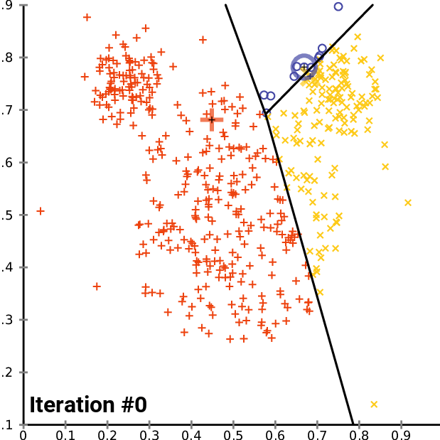
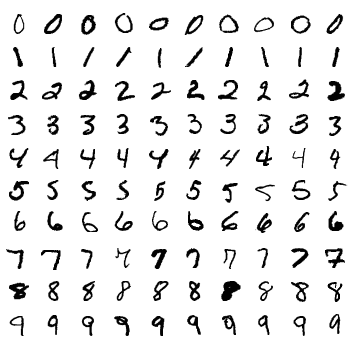
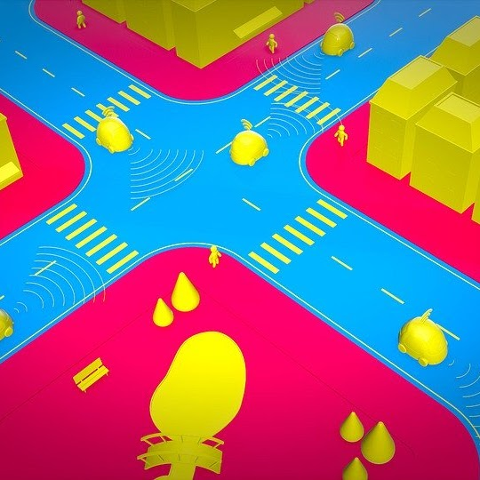
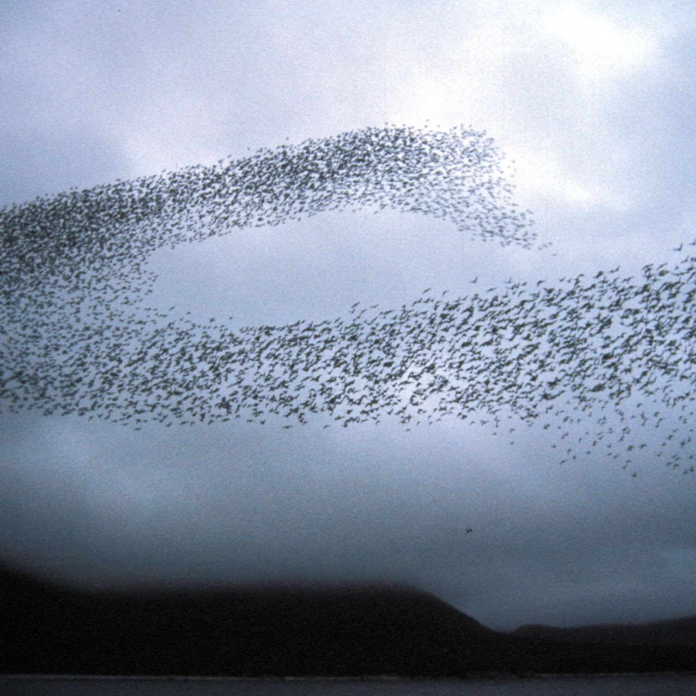

Research
Publications on MFG-based models for Cluster Analysis
 A Mean Field Games approach to Cluster Analysis, L. Aquilanti, S. Cacace, F. Camilli, R. De Maio, Applied Mathematics & Optimization (2020)
 A Mean Field Games model for finite mixtures of Bernoulli distributions, L. Aquilanti, S. Cacace, F. Camilli, R. De Maio, preprint on ArXiv
Publications on Multiscale models for Vehicular Traffic on Networks
In these papers, we proposed a measure theoretic approach to study in the same setting local and non-local drivers interactions and control variables. This method allows to define algorithms and models regardeless of the data source.
 A measure theoretic approach to traffic flow optimization on networks , S. Cacace, F. Camilli, R. De Maio and A. Tosin Vol. 30, Special Issue 6 (Applied Optimal Transport) , Dec. 2019 , pp. 1187-1209
Measure-valued solutions to transport equations on networks with nonlocal velocity, F. Camilli, R. De Maio, A. Tosin, Journal of Differential Equations, Vol. 264, Issue 12, June 2018, pg. 7213-7241
Transport of measures on networks , F. Camilli, R. De Maio and A. Tosin, Networks and Heterogeneous Media, June 2017, 12(2): 191-215.
Publications on Fractional derivatives and Applications
During my PhD, we stumbled upon the fractional calculus which allows us to add memory effects and describe many dynamical systems which occur in nature.
Memory effects in measure transport equations, F. Camilli, R. De Maio, Kinetic and Related Models, Dec. 2019, 12(6): 1229-1245.
A Hopf-Lax formula for Hamilton-Jacobi equations with Caputo time-fractional derivative, F. Camilli, R. De Maio, E. Iacomini, Journal of Mathematical Analysis and Applications, Vol. 477, Issue 2, Sep. 2019, pg. 1019-1032
 A time-fractional mean field game, F. Camilli, R. De Maio, Adv. Differential Equations, Vol. 24, no. 9/10 (2019), pg. 531-554.